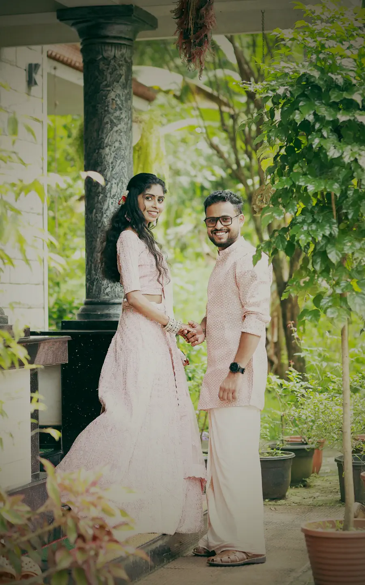
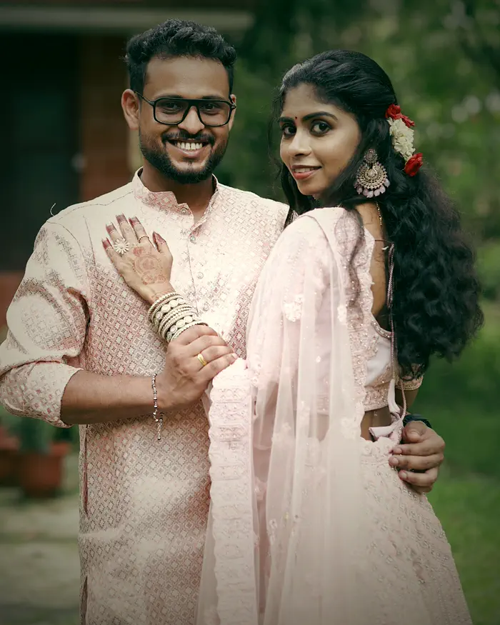

Together with our families
we cordially invite you
to the wedding of
Akhil weds Anupama
Sunday, 10 January 2027
9:30 AM – 10:30 AM
SDKY Auditorium
Sree Pottayil Temple
Eroor, Eranakulam

You are also invited to the
Reception
Monday, 11 January 2027
11 AM - 03:00 PM
Groom’s residence
V Star Hall, Pezhumpara, Palakkad

With love & blessings
P.K Sunil · Shiji · Ajil
Your presence
is our greatest joy.